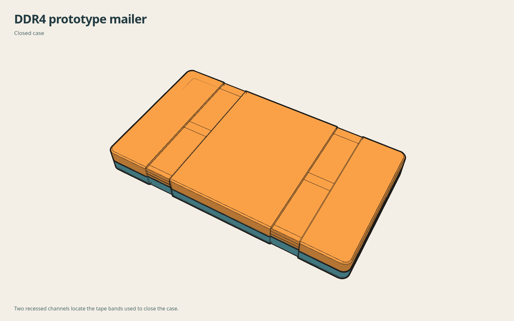
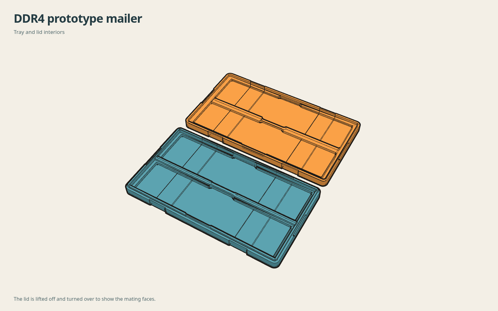

DDR4 mailer from a customer brief
Gemini 4 Argon (Medium) in Antigravity CLI, November 19, 2026.
This supplemental run uses the customer brief below. The scored comparison uses a shared technical prompt.
Delivered design
Argon designed a 143 × 79 × 14.8 mm case with two slim desktop DDR4 bays side by side. The lid locates on the tray lip. Two bands of tape run through recessed channels to hold it closed. The design assumes that each board goes into its own shielding sleeve inside the printed case.




Download CAD, meshes and review (ZIP) · Measured checks (JSON) · Brief (text)
Customer brief
Hey, it's John Smith from engineering. I need to mail two DDR4 prototypes this afternoon. They're the usual desktop RAM stick size and shape, but these two are really valuable to us. I need them to get there in one piece.
We've only got our regular mailers on hand, so whatever goes around them needs to stay pretty compact. The Bambu P1S is free this afternoon. Could you make me something I can print on it, pack up, and put in the mail today?
I'm tied up in the lab, so just use your judgment if there's something I haven't thought of. Send me the files and tell me how you'd pack it.
John Smith is a pseudonym. The run instructions supplied the CAD environment and required source and exports. The model made the design decisions in one turn.
Independent review
- Closure. Re-imported STEP parts were valid single solids. The closed tray and lid had zero measured overlap, and all five sampled lid seating positions cleared.
- Fit and retention. Both bays passed the nominal shaped board gauge and shaped gauges expanded by up to 1 mm per face. A uniform 9 mm-thick gauge hit the edge rails in both bays. The centered bare reference also cleared at ±1.5 mm vertically. Check how the actual sleeves and padding limit motion.
- Print geometry. Both binary STLs were watertight single components. The nominal two-part layout occupies 143 × 169 mm, inside the P1S’s stated build envelope. The tape channels create 16 mm-wide bridge spans 0.6 mm above the bed in the submitted orientation. Validate their toolpaths and the print time in a slicer. Bambu Lab P1S specifications
Physical checks still needed
Check the actual sleeves and padding with a representative board. Verify the lid fit, movement inside the taped case, and retention after handling before using the design for valuable prototypes. The postal test also depends on the actual outer mailer.